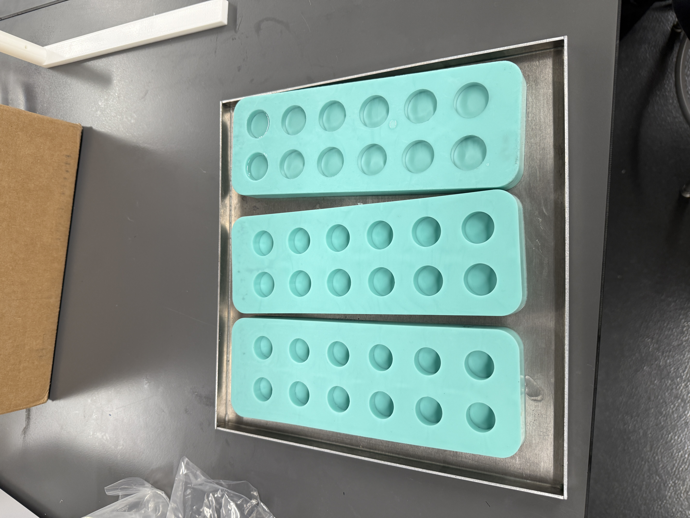
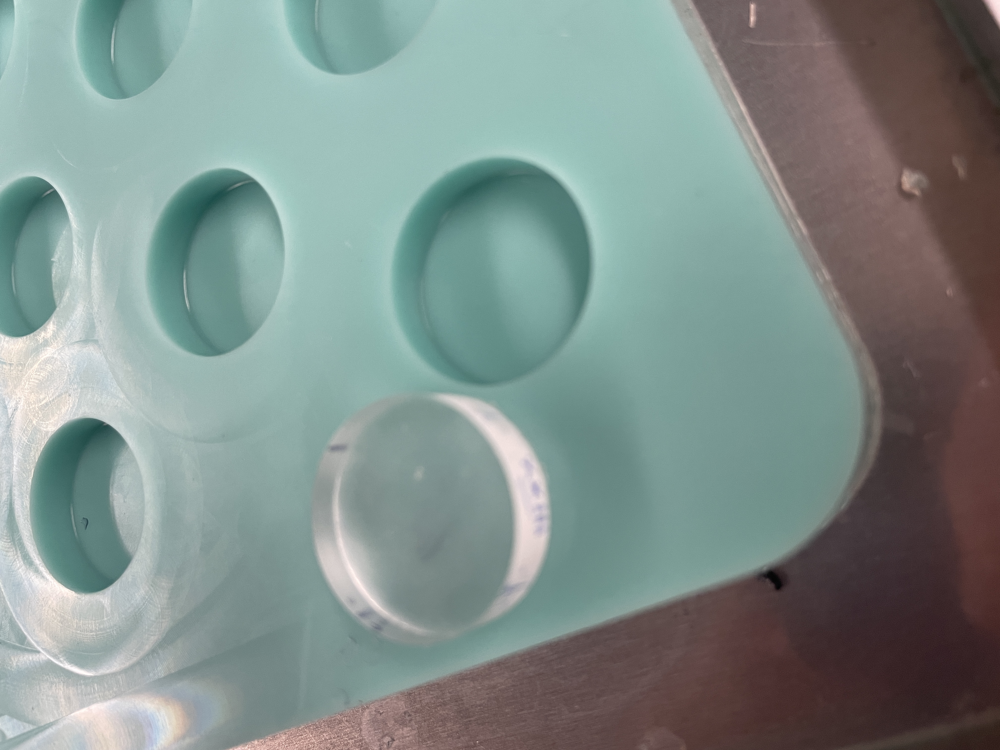
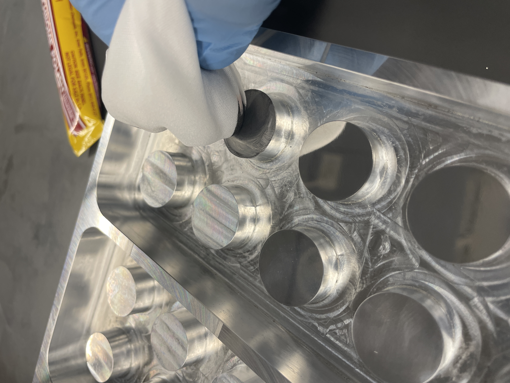
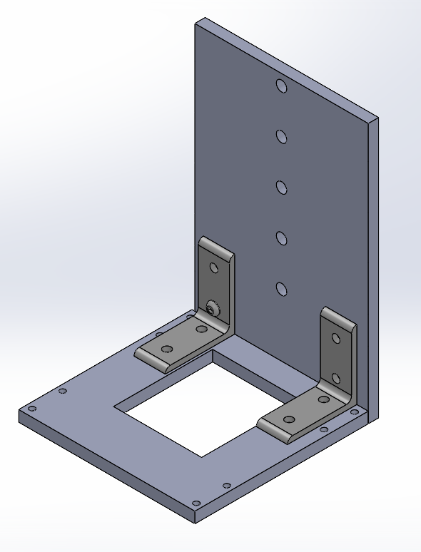
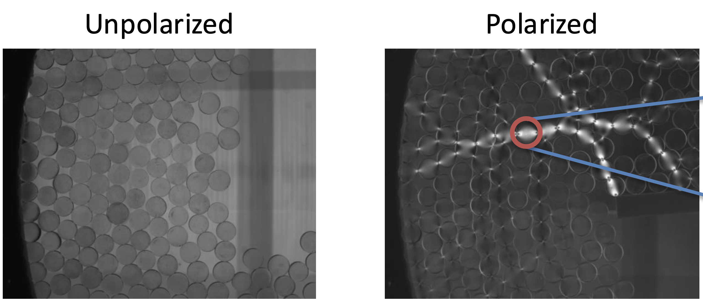
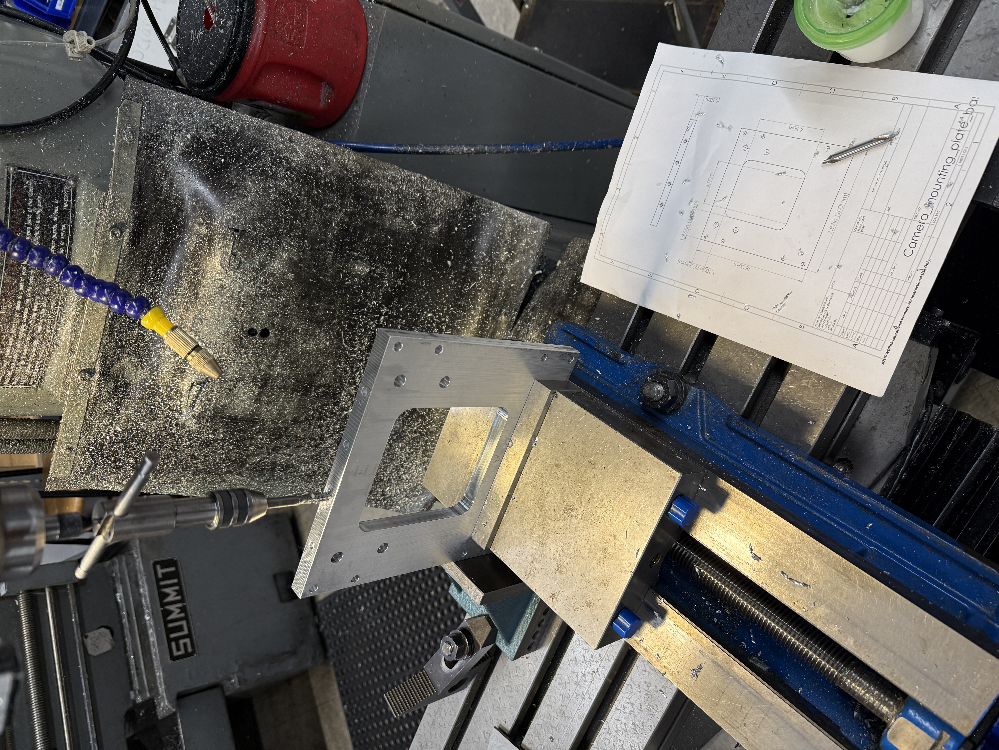
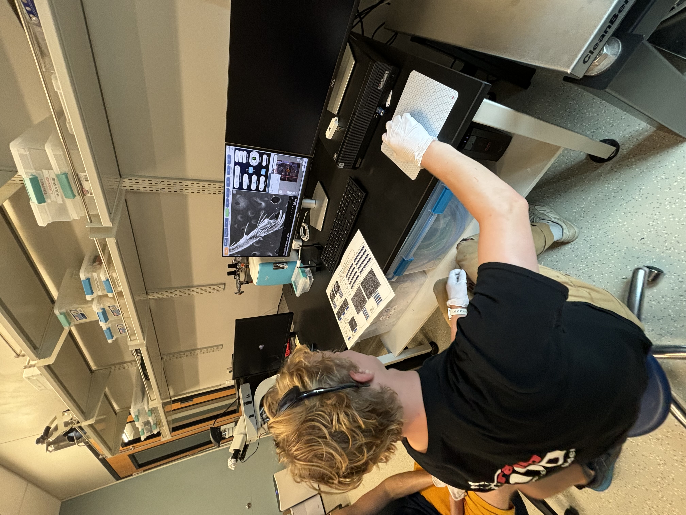
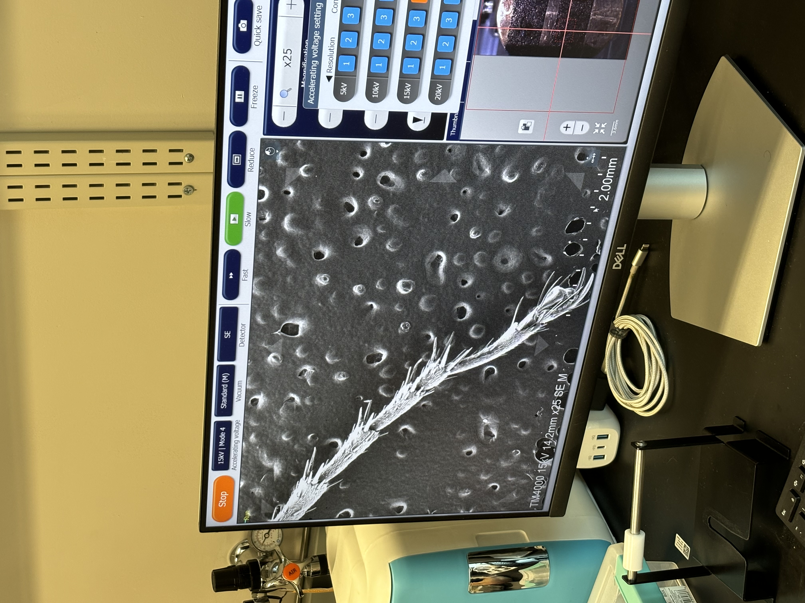

Granular Flow Lab


Projects
Here is a brief overview of some projects I completed for the lab. Please click through the slides.
Project 1: Large Rheometer Particle Imaging

Large Rheometer Setup.
I designed and manufactured the plexiglass mounting shelves and highspeed camera mount, poured the silicone gasket, and assembled the non-framing components.
I designed and manufactured the plexiglass mounting shelves and highspeed camera mount, poured the silicone gasket, and assembled the non-framing components.

Small-scale example of gasket mold.
We used Mold Star 15 silicone to pour the gasket. This involved measuring and mixing the two-part silicone by mass, removing air bubbles in a degassing chamber, and completing use within the 30-minute curing limit.
We used Mold Star 15 silicone to pour the gasket. This involved measuring and mixing the two-part silicone by mass, removing air bubbles in a degassing chamber, and completing use within the 30-minute curing limit.

Drawing for Plexiglass Mounting Shelf

Machining Plexiglass Mounting Shelf (1 of 4)

Overall Experiment Design
This experiment was designed by Austin Hayes.
This experiment was designed by Austin Hayes.
Project 2: Design Mold for Particle Pouring

Particle Mold Final Part
Pouring photoelastic particles is a mainstay in the lab. I needed to create a new negative for our silicone molds for a taller particle. Previous negatives were costly to manufacture and required a different negative for each size of particles. I was able to create a negative 3 different sized particles while reducing material and machining costs and making silicone mold pouring more efficient.
Pouring photoelastic particles is a mainstay in the lab. I needed to create a new negative for our silicone molds for a taller particle. Previous negatives were costly to manufacture and required a different negative for each size of particles. I was able to create a negative 3 different sized particles while reducing material and machining costs and making silicone mold pouring more efficient.

Part Drawing 1

Part Drawing 2

SolidWorks Design

Casted Silicone Molds

Photoelactic particle example

Polishing mold for smooth finish. Tool marks would otherwise be visible on particles
which would affect imaging.
Project 3: Vertical Mount for High Speed Camera

Final Design and Assembly
I was tasked with creating a mount for our highspeed camera. The camera would be mounted on sliding rails above the large rheometer experiment and point down to image photoelastic particle interactions.
I was tasked with creating a mount for our highspeed camera. The camera would be mounted on sliding rails above the large rheometer experiment and point down to image photoelastic particle interactions.

Solidworks design

Example imaging from camera

Drawing for Base of Camera Mount Assembly

Drawing for Mounting Plate of Camera Mount Assembly

Machining Base of Mount
Extra: Electron Microscope Training

Viewing Microscope Imaging

Imaging Bug Leg

Imaging Flower Petal

Imaging Bug Eye